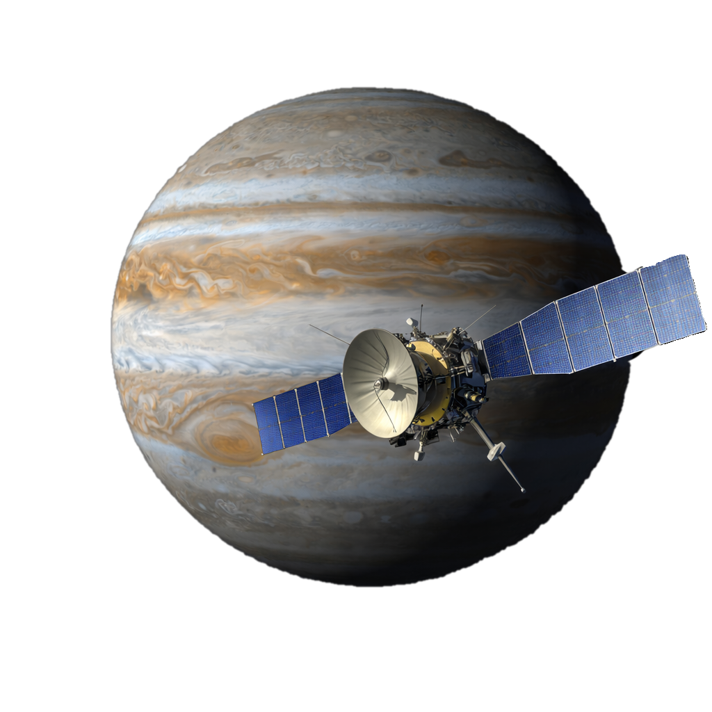
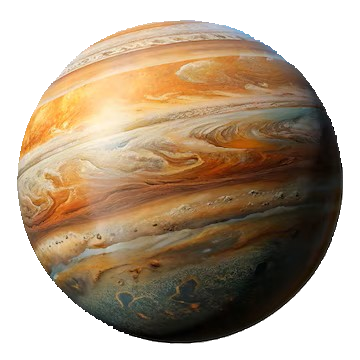

Clipper-Sonden

Clipper er det første sonden som er utformet for å studere Jupiters måne Europa. Det finnes bevis for at ingrediensene for liv kan eksistere på Europa akkurat nå.
Juno-Sonden


Jupiter er solsystemets største planet, en massiv gasskjempe 778 millioner km fra solen


Clipper er det første sonden som er utformet for å studere Jupiters måne Europa. Det finnes bevis for at ingrediensene for liv kan eksistere på Europa akkurat nå.